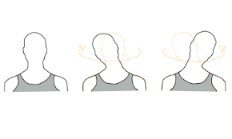
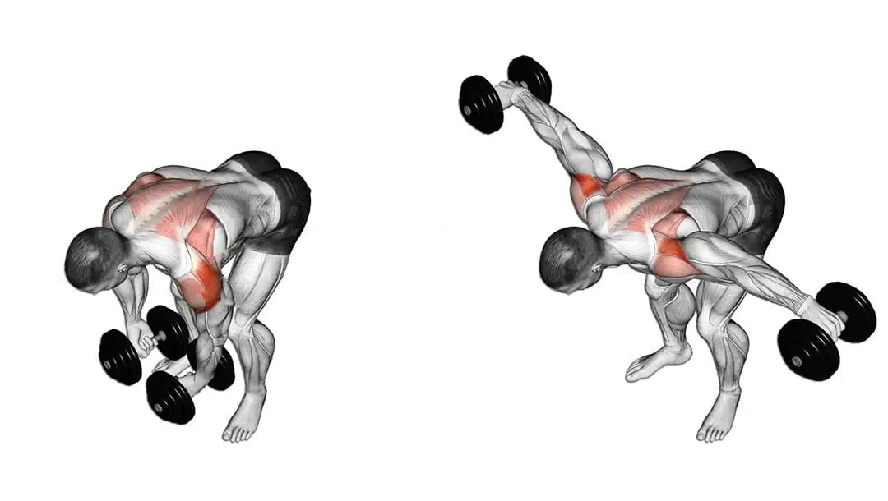
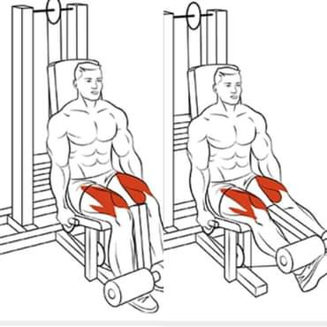
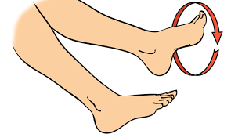

Para la columna cervical: puedes hacer rotaciones de cabeza, inclinaciones laterales, flexiones y extensiones, y estirar los músculos del cuello y los hombros¹ .
Para el hombro: puedes hacer elevaciones anteriores, laterales y posteriores, rotaciones internas y externas, y estirar los músculos del pecho y la espalda².
Para la rodilla: puedes hacer flexiones y extensiones de rodilla, sentadillas, zancadas, y estirar los músculos del cuádriceps y los isquiotibiales².
Para el tobillo: puedes hacer movimientos circulares, flexiones plantares y dorsales, y estirar los músculos de la pantorrilla y el pie².
